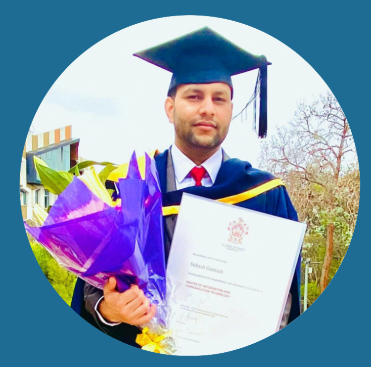
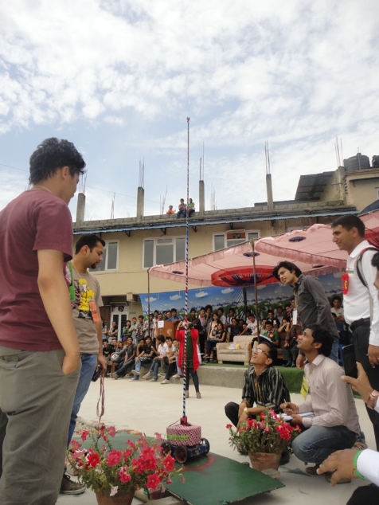
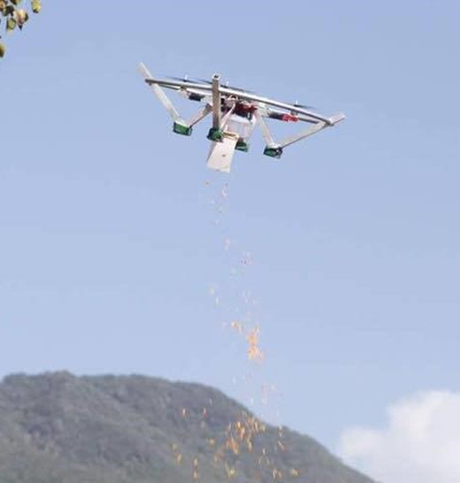
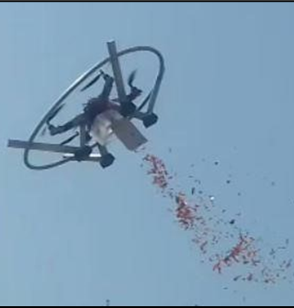
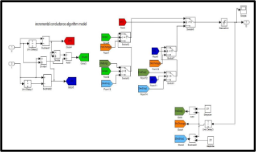
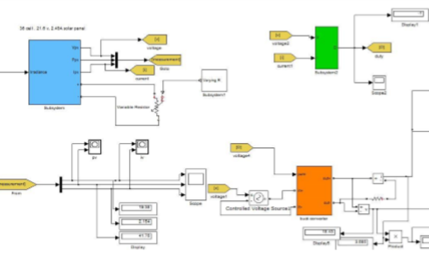
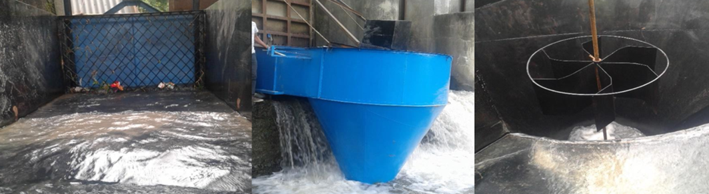
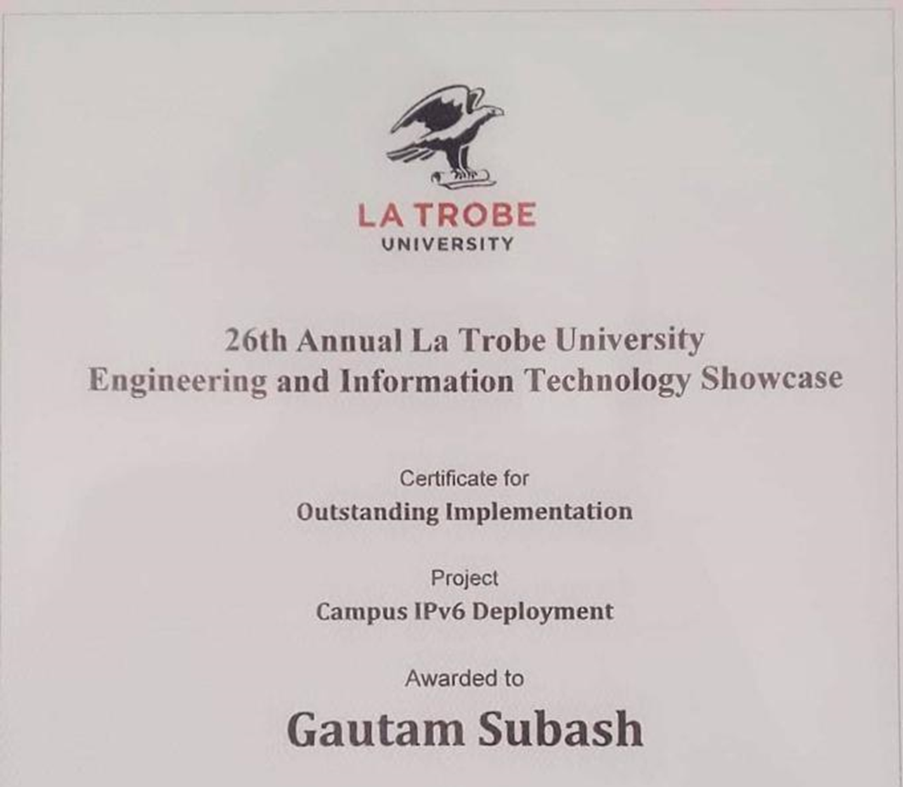
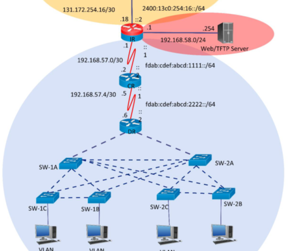

Developed a real-time 4D reconstruction pipeline for continuous monitoring of dynamic additive manufacturing processes.

Interactive CV · Melbourne
Subash Gautam
Research Engineer · PhD Mechatronics
- 5+ yrs research
- 4 RCIM papers
- 1 patent
- PhD RMIT × CSIRO
Professional Summary
Research Engineer with a PhD in Mechatronics Engineering and 5+ years developing advanced 3D/4D reconstruction, image processing algorithms, and machine-learning-driven defect detection for high-rate dynamic systems. Proven track record delivering novel imaging pipelines, real-time reconstruction frameworks, and physics-guided computer vision methods deployed on robotic and industrial platforms. Passionate about translating complex imaging research into robust, commercial-ready solutions.
Selected Achievements
Designed a geometric digital twin framework for in-process shape monitoring and deviation analysis.
Created a closed-form hand–eye calibration method for multi-sensor systems, significantly reducing calibration time.
Co-inventor on provisional patent 2025904901 — systems and methods for monitoring during manufacturing.
Published multiple first-author papers in Robotics and Computer-Integrated Manufacturing on 4D reconstruction and imaging.
Research & Projects
Click a project card to explore photos and details.
Research & industry

Digital Twin · 4D Reconstruction · Defect Detection
Designed real-time 4D reconstruction for robotic AM, geometric digital twin (gDT-AM) for shape monitoring, in-process 3D deviation mapping (3D-DM²), and ML-driven defect segmentation on cold spray platforms.
3D-DM² paper →Closed-form · Two-stage · Single-plane artefact
Robotics · Calibration · RCIM 2025
Streamlined robotic hand–eye calibration of multiple 2D laser profilers — rapid closed-form two-stage method that dramatically improves speed and accuracy for multi-sensor vision systems.
Read paper →
RMIT · VLM · Robotics Education
Automated pipelines converting 2D architectural plans to structured digital models. Leading robotics labs mentoring students in C++, Python, ROS2, and computer vision.
Early engineering


Robotics · Competition · Nepal
Robot "Nepali Keto" navigated hurdles, sand, pebbles, mud, and water — from Terai to Everest — and raised the flag 3.9m high in under two minutes.


Autonomous · PID · Arduino
Five-sensor line array with obstacle detection and PID-controlled movement on Arduino Mega — foundation in autonomous navigation.



UAV · Surveillance · Logistics
Cloud-based IP camera for real-time aerial monitoring with precision payload delivery for disaster response and medical supplies.



Solar · Embedded · IEEE
Incremental conductance MPPT validated in hardware and MATLAB — 33% PV output boost in hardware. Published at IEEE ICRERA 2016.
IEEE paper →

Renewable Energy · Hydropower
Gravitational water vortex power plant pilot for rural electrification — simple, replicable design for remote villages in Nepal.



Networking · IPv6 · La Trobe
Dual-stack IPv6 deployment across campus network — awarded Outstanding Implementation at La Trobe Engineering Showcase 2019.
Experience
- Developed automated image-processing pipelines for converting 2D architectural plans into structured digital models.
- Led robotics laboratory sessions, mentoring students in C++, Python, ROS2, and computer vision.
- Guided student engineering teams through hypothesis testing, prototyping, and system integration.
- Designed real-time 4D reconstruction pipeline for robotic additive manufacturing.
- Developed in-process 3D deviation mapping and defect detection with temporal modelling.
- Created geometric digital twin framework combining physics-based and data-driven reconstruction.
- Developed closed-form two-stage hand–eye calibration for multiple 2D laser profilers.
- Co-inventor on provisional patent 2025904901; published 4 peer-reviewed papers.
- Taught C, C++, and Python — algorithms, data structures, and OOP to undergraduates.
- Delivered hands-on labs for embedded systems and automation applications.
Core Skills
Image Processing & Reconstruction
Software & Algorithms
Robotics & Manufacturing
Research & Leadership
Publications
Geometric Digital Twin for Robotic Additive Manufacturing (gDT-AM)
In-process 3D Deviation Mapping and Defect Monitoring (3D-DM²)
arxiv.org/pdf/2511.05604Streamlined robotic hand–eye calibration of multiple 2D-profilers
doi.org/10.1016/j.rcim.2025.102984In-process 4D reconstruction in robotic additive manufacturing
doi.org/10.1016/j.rcim.2024.102784Maximum power point tracker with solar prioritizer in photovoltaic application
doi.org/10.1109/ICRERA.2016.7884494Education
PhD — Mechanical, Mechatronics & Manufacturing
RMIT University, Melbourne — Real-time 4D reconstruction, hand–eye calibration, geometric defect segmentation using ML.
Master of Information & Communication Technology
La Trobe University — 88.25% WAM. Golden Key International Honour Society (top 15%).
BEng — Electronics & Communication Engineering
Purbanchal University, Nepal — Final year project published in IEEE Xplore (ICRERA 2017).
Honours & Awards
NRNA Australia Academic Excellence Award
Outstanding performance during master's degree.
Outstanding IPv6 Campus Deployment
La Trobe University Engineering & IT Showcase.
Best Project Award — MPPT Solar System
Department of ECE, Acme Engineering College, Purbanchal University.
National Robotics Competition Winner
NCIT ROBO Drive 2013 — National College of Information Technology, Nepal.